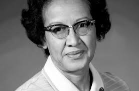
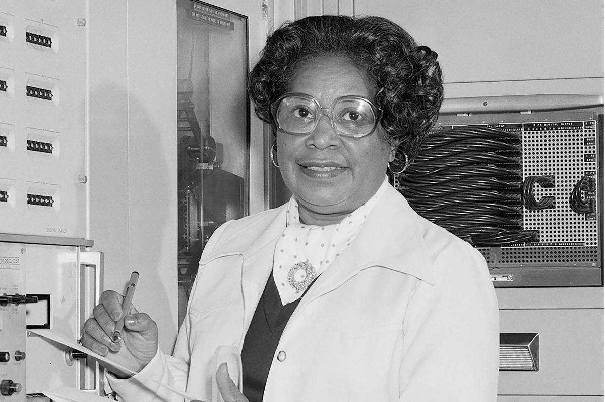
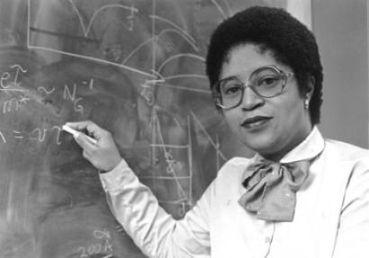

___________________________________________________________________________________________________________
___________________________________________________________________________________________________________
Dorothy Johnson Vaughan nasceu em Kansas City, 20 de setembro de 1910.
Foi uma matemática estadunidense, que trabalhou na National Advisory
Committee for Aeronautics (NACA), a agência predecessora da NASA
onde foi designada para a West Area Computers, uma área segregada da instalação,
com mulheres negras com formação em matemática, cujos cálculos foram usados em projetos espaciais e de aviação.
Em 1949, ela foi a primeira mulher negra a ser promovida chefe de departamento na NASA,
uma das poucas mulheres, em uma época em que o racismo era explícito no país.
Dorothy se especializou em computação e em programação FORTRAN.
Trabalhou nos centros de pesquisa e análise computacional de Langley,
participando dos testes do Projeto Scout (Solid Controlled Orbital Utility Test system) na Wallops Flight Facility.
Dorothy se aposentou da NASA em 1971 e faleceu em 10 de novembro de 2008.
___________________________________________________________________________________________________________

Katherine nasceu em White Sulphur Springs, 26 de agosto de 1918.
Ela fez contribuições fundamentais para a aeronáutica e exploração espacial dos Estados Unidos,
em especial em aplicações da computação na NASA.
Conhecido pela precisão na navegação astronômica informatizada,
seu trabalho de liderança técnica na NASA se estendeu por décadas onde ela calculava as trajetórias,
janelas de lançamento e caminhos de retorno de emergência para muitos voos de Projeto Mercury,
incluindo as primeiras missões da NASA de John Glenn, Alan Shepard, o voo da Apollo 11, em 1969,
à Lua e trabalho contínuo por meio do programa dos ônibus espaciais e sobre os planos iniciais para a missão a Marte.
Passou seus últimos anos incentivando os alunos a entrar nas áreas de ciência, tecnologia, engenharia e matemática (STEM).
A família morou em Newport News, Virgínia, desde 1953, primeiro com Johan Goble
até sua morte em 1956 e desde 1959 com James Johnson.
faleceu em um lar de idosos em Newport News em 24 de fevereiro de 2020, com 101 anos de idade.
Após sua morte, o administrador da NASA Jim Bridenstine a descreveu
como "uma heroína americana" e declarou que "seu legado pioneiro nunca será esquecido ".
___________________________________________________________________________________________________________

Mary nasceu em Hampton, 9 de abril de 1921.
Mary foi para o National Advisory Committee for Aeronautics (NACA), em 1951.
Começou sua carreira como matemática no Langley Research Center, ainda em Hampton.
Em 1953, ela foi para o Compressibility Research Division.
Depois de 5 anos na NASA e de vários cursos de extensão, Mary foi para um
programa especial de treinamento e foi promovida a engenheira aeroespacial.
Trabalhou com análise de dados em experimentos com túnel de vento e de aeronaves
experimentais no Departamento Teórico de Aerodinâmica,
na Divisão de Aerodinâmica Subsônica-Transônica, em Langley.
Seu objetivo era de entender como o ar fluía, incluindo empuxo e arrasto.
Muitos anos depois, ela foi designada para trabalhar como engenheira aeroespacial na NASA.
Depois de 34 anos na NASA, Mary alcançou o nível mais alto como engenheira sem ter que se tornar supervisora.
Mary trabalhou na NASA até sua aposentadoria, em 1985.
Mary faleceu em 11 de fevereiro de 2005, aos 83 anos.
___________________________________________________________________________________________________________

Shirley nasceu em Washington D.C., 5 de agosto de 1946.
Shirley foi para o Instituto de Tecnologia de Massachusetts (MIT), em 1964,
uma das menos de 20 pessoas negras do instituto e a única estudando física teórica.
Foi voluntária no Boston City Hospital, enquanto ainda era estudante
e orientou estudantes na Associação Cristã de Moços, em Roxbury.
Obteve o bacharelado em 1968, com uma tese em física do estado sólido.
Aprovada para permanecer no MIT para seu doutorado, obteve seu título em 1973,
sendo a primeira negra a obter um doutorado no MIT,
trabalhando com teoria de partículas elementares.
Shirley também foi a segunda mulher negra nos Estados Unidos a obter um doutorado em Física.
___________________________________________________________________________________________________________